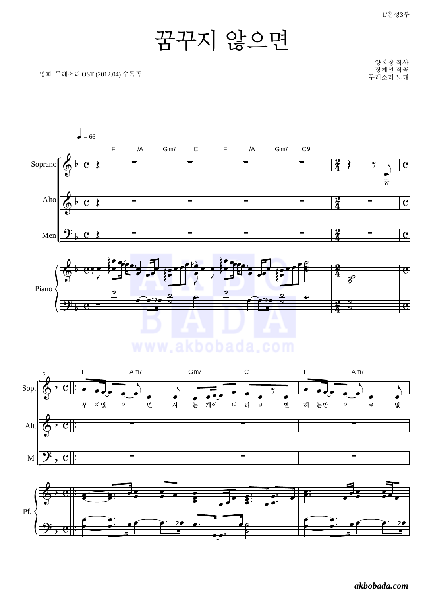
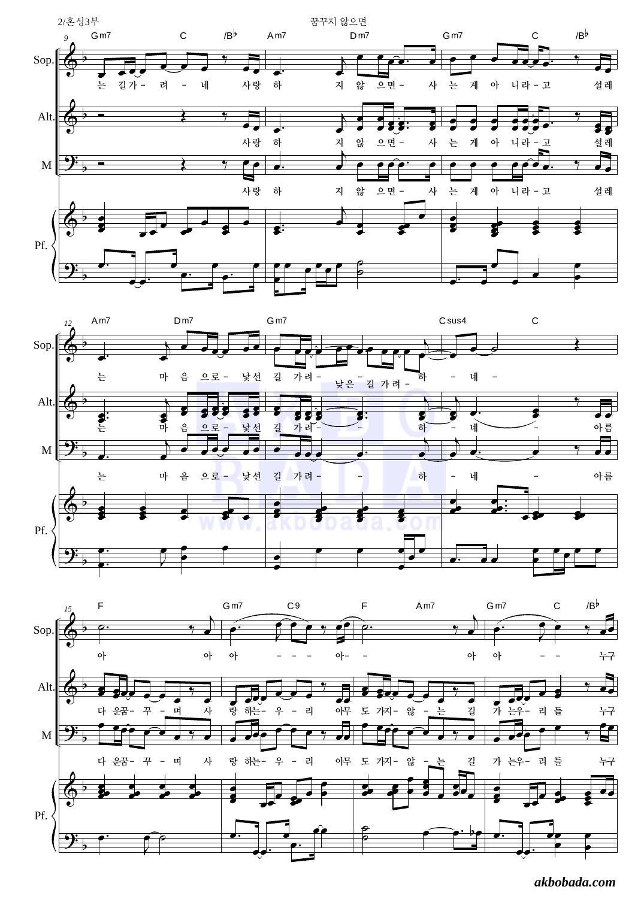
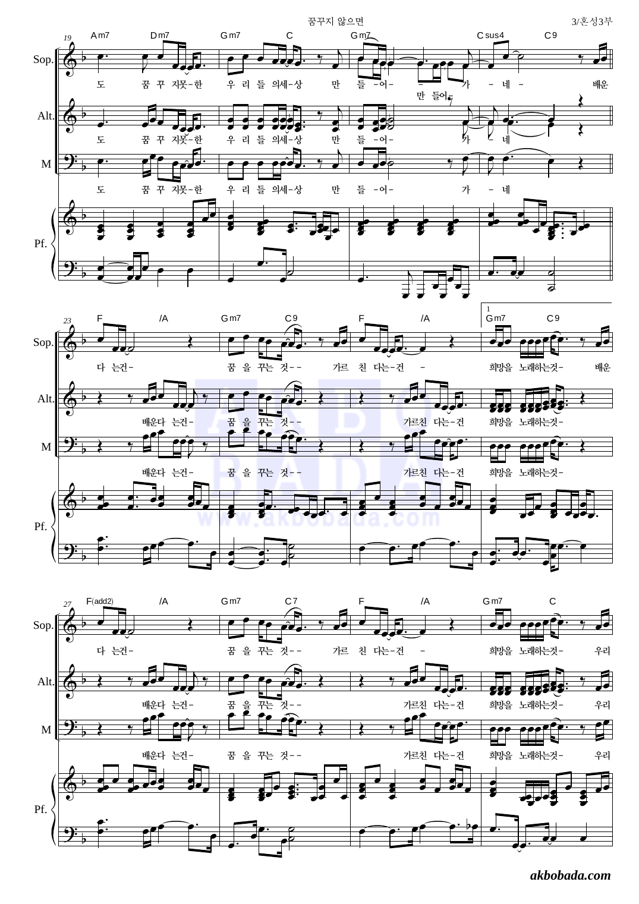
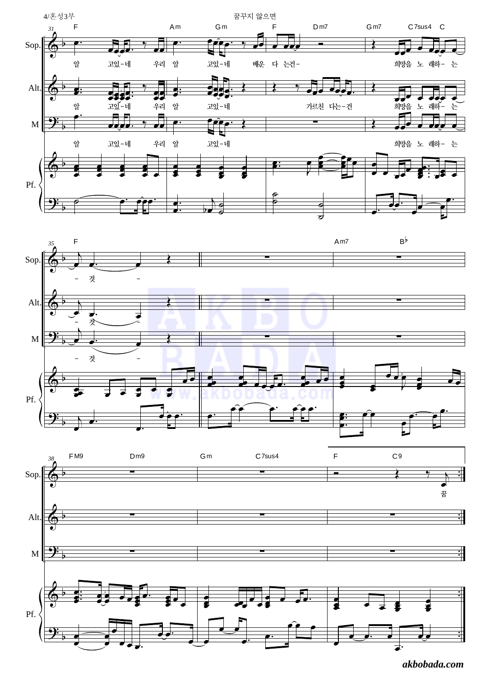
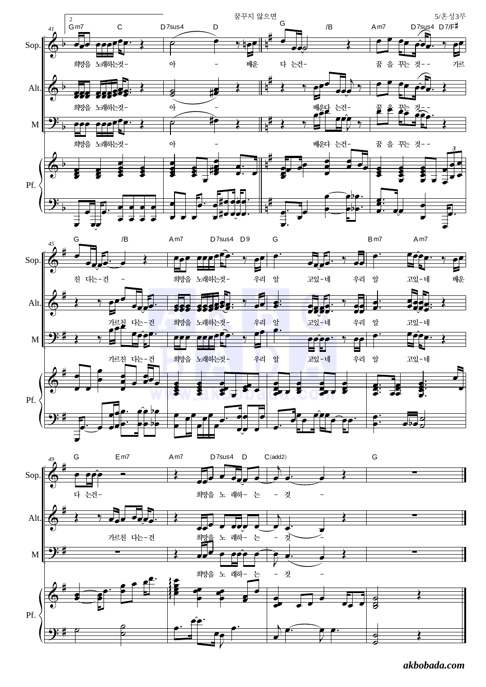

♫
꿈꾸지 않으면 · 합창 연습실
원본 악보 보기
노래 듣기
음원 듣기
흐르는 악보
전체
Soprano
Alto High
Alto Low
Men
전주
악보 싱크
0.00s
0:00.0
0:00.0
−5초
▶ 재생
+5초
현재 구간 반복
속도
0.75×
0.85×
0.90×
1.00×
1.10×
A · 반복 시작
--:--.-
B · 반복 끝
--:--.-
🔁 반복 OFF
A 설정
B 설정
A로
초기화
파트 믹서
전체
Sop
A.High
A.Low
Men
반주
전체
Sop
Alto
Men
원본 악보
닫기




